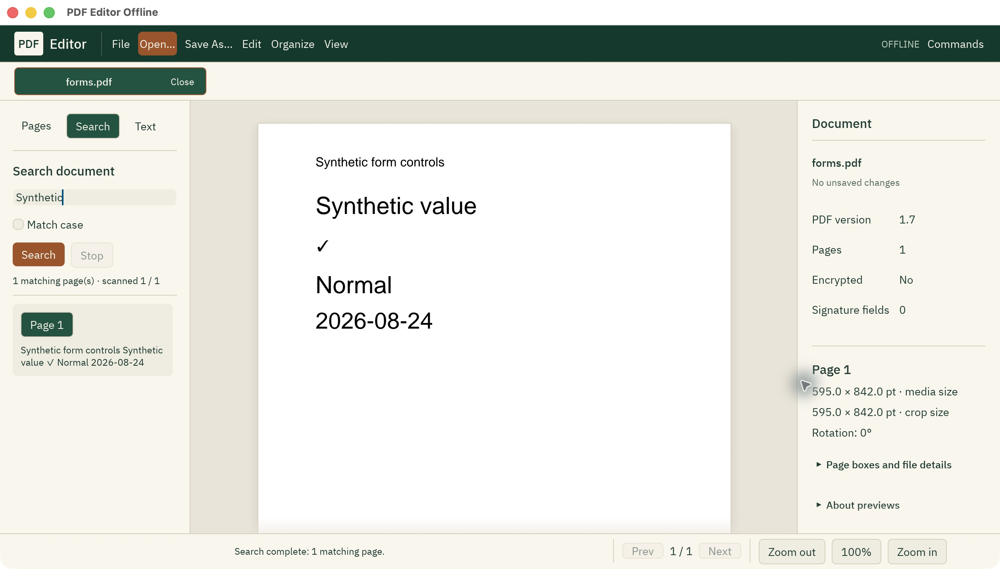
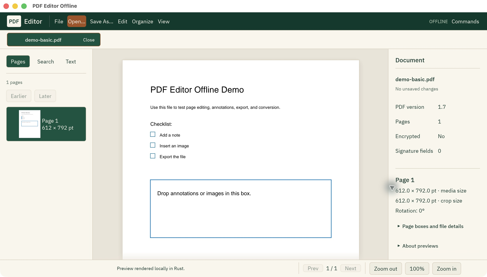
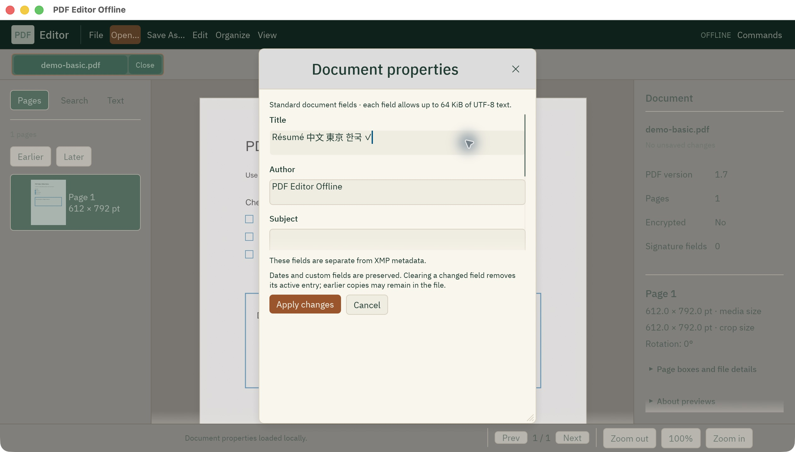
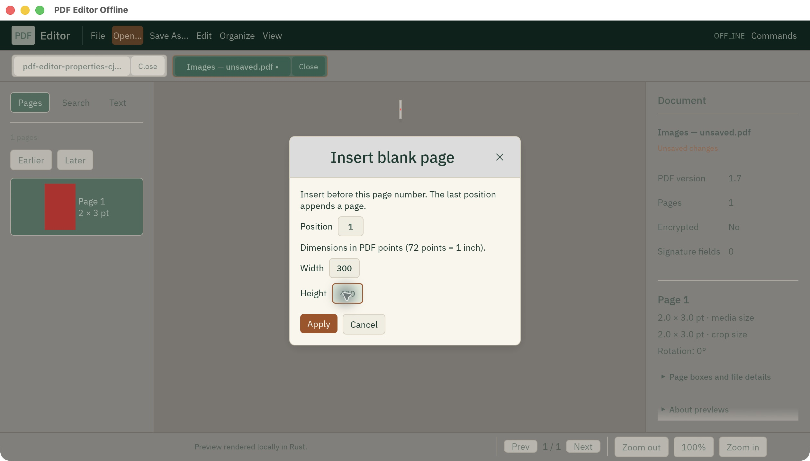
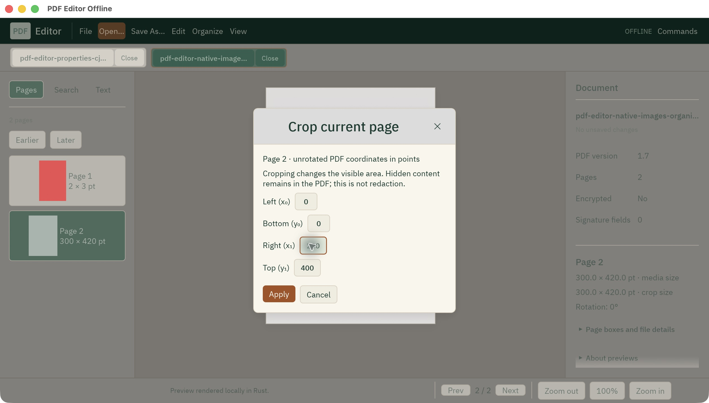

Read & find
Navigate PDF tabs, zoom for your display, browse lazy page thumbnails, search literal page text and read extracted text.
Native Rust preview
Open source · MIT
Read, organize and save your pages in a calm, local workspace.
Built in Rust, with a native window and local rendering. The current preview is available to build from source.
macOS runtime reviewed. Other platform runtime checks remain open.

A place for the pages
These are working preview features, shown in real native captures. Every save creates a new copy.
Navigate PDF tabs, zoom for your display, browse lazy page thumbnails, search literal page text and read extracted text.
Rotate, move pages earlier or later, reverse their order, insert a blank page and change the visible crop. Undo and redo retain your edits.
Edit six standard fields with Unicode storage. Dates, custom fields and embedded XMP remain intact; XMP is not synchronized.
Turn supported PNG and JPEG files into an unsaved PDF. One source pixel becomes one PDF point. Unsupported orientation and color metadata is refused.




Know the preview
This is a native preview, with a useful working core and more to build.
Arbitrary PDF text editing, form filling, signing, secure redaction and OCR are not available in the native interface. Crop and metadata removal do not securely erase content.
Signed inputs are read only. Password entry is unavailable; protected inputs that need a password are refused. A successful preview does not prove complete rendering fidelity. Broader document coverage and platform validation remain separate work.
Read the current feature statusMeasured, with a scope
11 fixtures, including a 1,000-page file. Info, text extraction, rotation and compression. No failed or skipped records in the dated local report.
12 October 2026 · source 49bd559 · 14.1201 seconds for the recorded matrix. This does not measure desktop responsiveness, peak memory, speedups or complete raster fidelity.
Read the benchmark boundaries